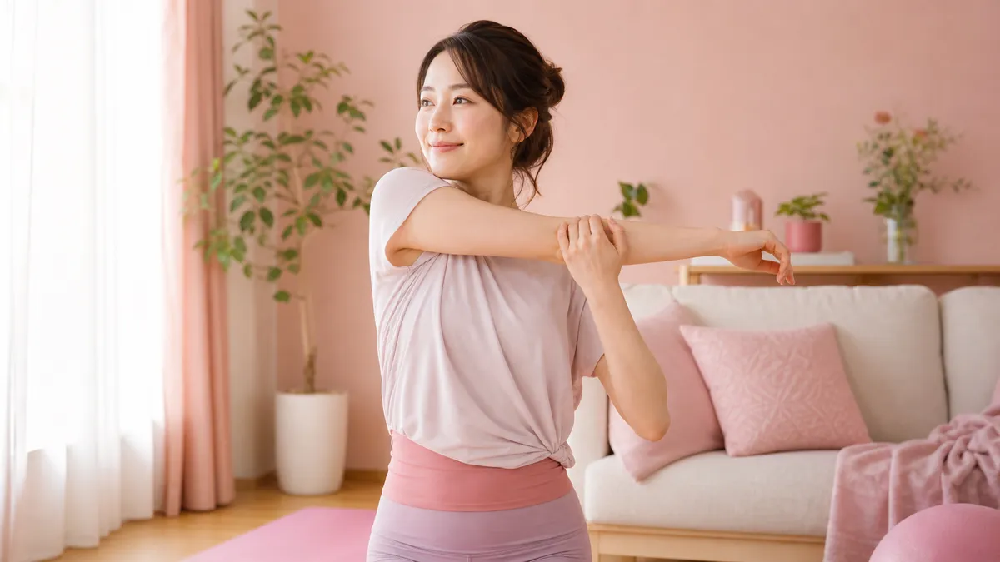

二の腕がたるむ主な原因は3つ
「半袖を着るのが憂鬱…」と感じる女性はとても多いです。まず原因を知ることが、効率よく引き締めるための第一歩になります。
① 上腕三頭筋の筋力低下
二の腕の裏側にある「上腕三頭筋」は、日常生活ではほとんど使われません。使わない筋肉は衰えてたるみの原因になります。
② リンパ・血行の滞り
デスクワークやスマホ操作で腕を動かさない時間が長くなると、リンパや血液の流れが滞り、むくみやすくなります。
③ 皮下脂肪の蓄積
女性ホルモンの影響で、女性は二の腕・お腹・太ももに脂肪がつきやすい体質です。食事や運動のバランスを整えることが大切です。
4週間で変わる！二の腕引き締めプラン全体像
以下のインフォグラフィックで、4週間のステップを確認してみましょう。
💪 二の腕4週間引き締めロードマップ
▼ 週ごとにフォーカスを変えて無理なく進めよう ▼
🩸 血行・むくみリセット
- 腕回しストレッチ（朝晩各1分）
- リンパマッサージ（入浴後2分）
- 水分を1日1.5L意識する
🔥 上腕三頭筋を目覚めさせる
- 壁プッシュアップ 10回×2セット
- タオルトライセプス伸ばし 左右30秒
- 毎日継続を最優先に
💥 負荷を少しアップ
- ペットボトル（500ml）アームカール 15回×2セット
- 椅子ディップス 8回×2セット
- 週3〜4回ペースで実施
✨ 仕上げ＆習慣化
- Week2〜3の種目を組み合わせ
- 姿勢改善ストレッチを追加
- 食事・睡眠も意識して整える
Week1：まずは血行とむくみをリセット（1〜7日目）
いきなりハードな運動より、まず「流れをよくする」ことが大切です。1週間は以下の3つだけ実践してみてください。
腕回しストレッチ（朝晩各1分）
両腕を肩の高さに伸ばし、前回し・後ろ回しを各20回ずつ。肩甲骨が動くのを意識するのがポイントです。
リンパマッサージ（入浴後2分）
ボディクリームやオイルを使い、手首から脇の下に向かって優しく押し流すように10〜15回なでます。左右それぞれ1分ずつ行いましょう。
水分補給を意識する
1日1.5Lを目安に、常温の水やノンカフェインのお茶を少しずつ飲む習慣をつけましょう。むくみの解消につながります。
Week2：上腕三頭筋を動かす基本エクササイズ（8〜14日目）
二の腕の裏側「上腕三頭筋」にアプローチする動きを取り入れます。道具不要で自宅でできます。
壁プッシュアップ（10回×2セット）
壁から1歩離れて立ち、両手を肩幅で壁につきます。肘を曲げて胸を壁に近づけ、ゆっくり戻す。脇を締めて行うと二の腕裏に効きます。
タオルトライセプスストレッチ（左右30秒）
タオルの端を持ち、頭の後ろで肘を曲げて上腕三頭筋を伸ばします。反対の手で肘を軽く押さえると伸びが増します。
Week3：負荷を少しアップして引き締め加速（15〜21日目）
慣れてきたら、少し負荷をかけた動きを加えます。500mlのペットボトルを使うだけでOKです。
ペットボトルアームカール（15回×2セット）
500mlのペットボトルを両手に持ち、肘を固定したまま曲げ伸ばしします。ゆっくり4秒かけて下ろすのがコツです。
椅子ディップス（8回×2セット）
椅子の端に手をつき、お尻を前に出して肘を曲げ伸ばしします。上腕三頭筋に強くアプローチできる種目です。無理のない範囲で行いましょう。
Week4：習慣化＋姿勢改善で仕上げ（22〜28日目）
Week2〜3の種目を組み合わせながら、姿勢の改善も意識します。猫背だと二の腕が余計に目立ちやすいためです。
肩甲骨を寄せる意識で胸を開くと、腕のラインが自然とすっきり見えます。ストレッチポールを使った姿勢改善のやり方も参考にしてみてください。
食事面でできる3つのサポート習慣
エクササイズと合わせて、食事面でもシンプルなことを意識するとより効果的です。
① タンパク質を毎食意識する
筋肉の材料となるタンパク質（肉・魚・卵・大豆製品）を毎食1品以上取り入れましょう。目安は体重×1g程度です。
② 塩分を摂りすぎない
塩分過多はむくみを悪化させます。加工食品・外食の頻度を週3回以内に抑えるだけでも変化を感じやすくなります。
③ 間食はナッツや果物に置き換える
甘いお菓子を食べたいときは、素焼きナッツ（20粒程度）や果物に置き換えるのがおすすめです。太りにくい間食の選び方もあわせて参考にしてみてください。
よくある質問（FAQ）
Q. 二の腕のエクササイズは毎日やった方がいいですか？
筋肉を使うエクササイズ（壁プッシュアップ・椅子ディップスなど）は、週3〜4回を目安に行い、間に1日の休息を入れるのが理想的です。毎日行いたい場合は、ストレッチやマッサージを「休息日のケア」として取り入れましょう。
Q. 何週間くらいで二の腕の変化を感じられますか？
個人差はありますが、継続した場合、むくみの軽減は1〜2週間、引き締まった感覚は3〜4週間ほどで感じ始める方が多いです。見た目の変化には2〜3ヶ月の継続が目安になります。焦らず続けることが大切です。
Q. 二の腕だけ集中して細くすることはできますか？
特定の部位だけを狙って脂肪を落とす「部分痩せ」は難しいとされています。ただし、その部位の筋肉を鍛えることで引き締まって見えるようになります。全身の血行や代謝を高める習慣と組み合わせると、より変化を感じやすくなります。
ダイエット全体の習慣づくりについては、部位別・食事・運動の関連記事一覧もあわせてご覧ください。